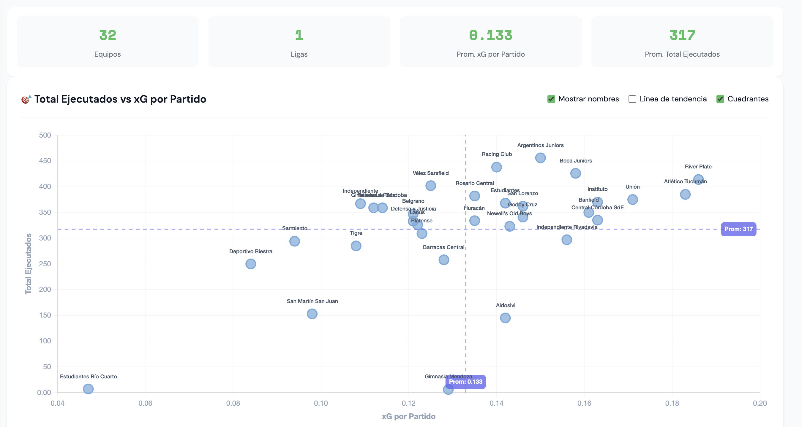
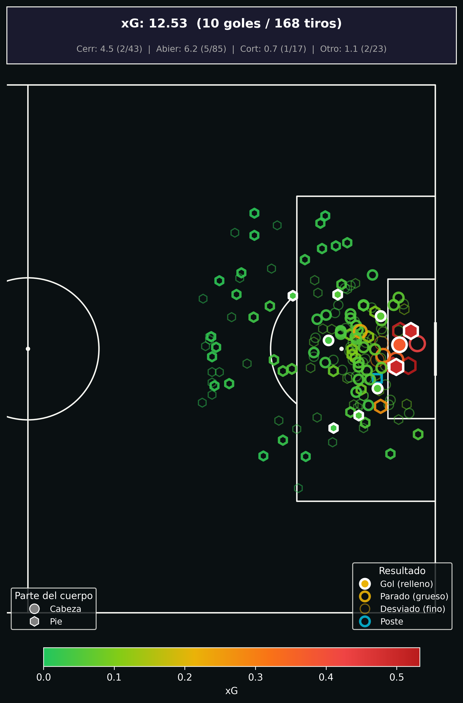
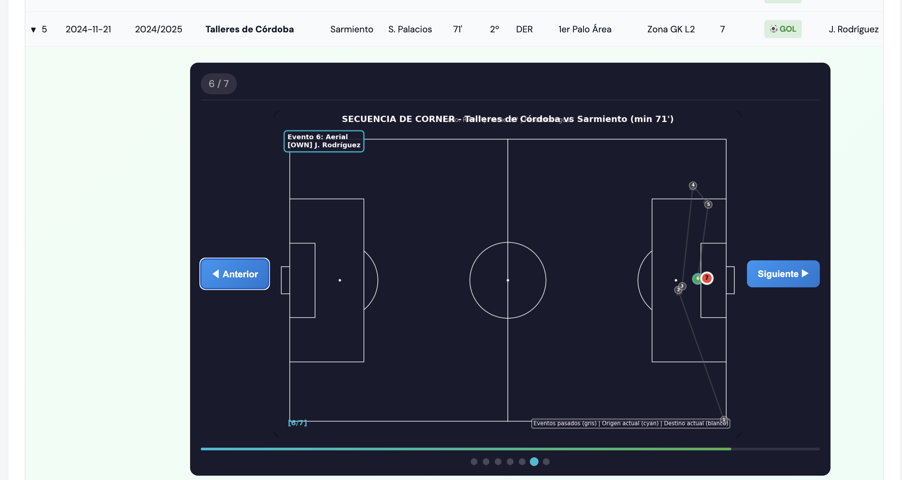
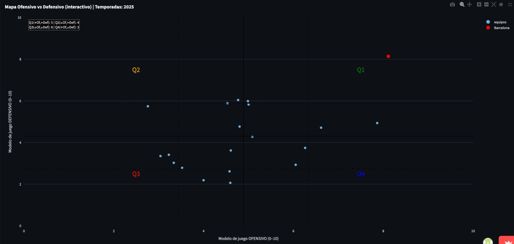
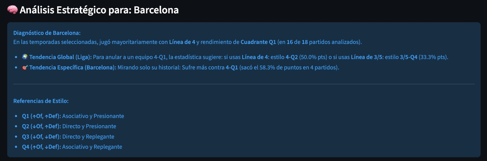
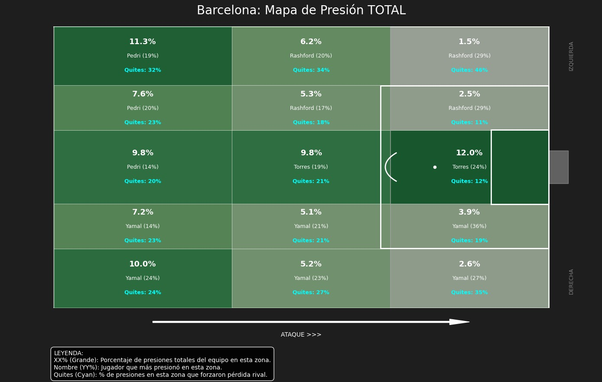
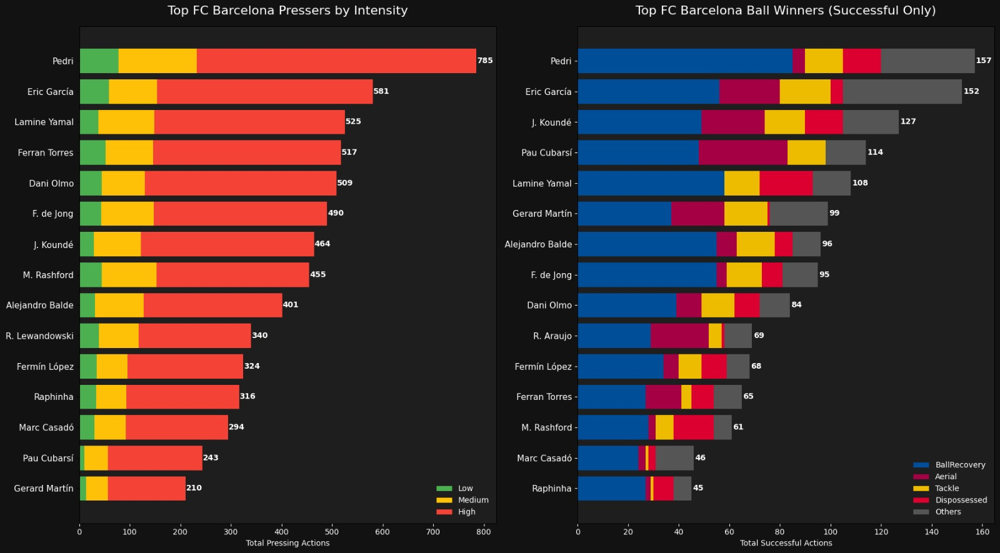
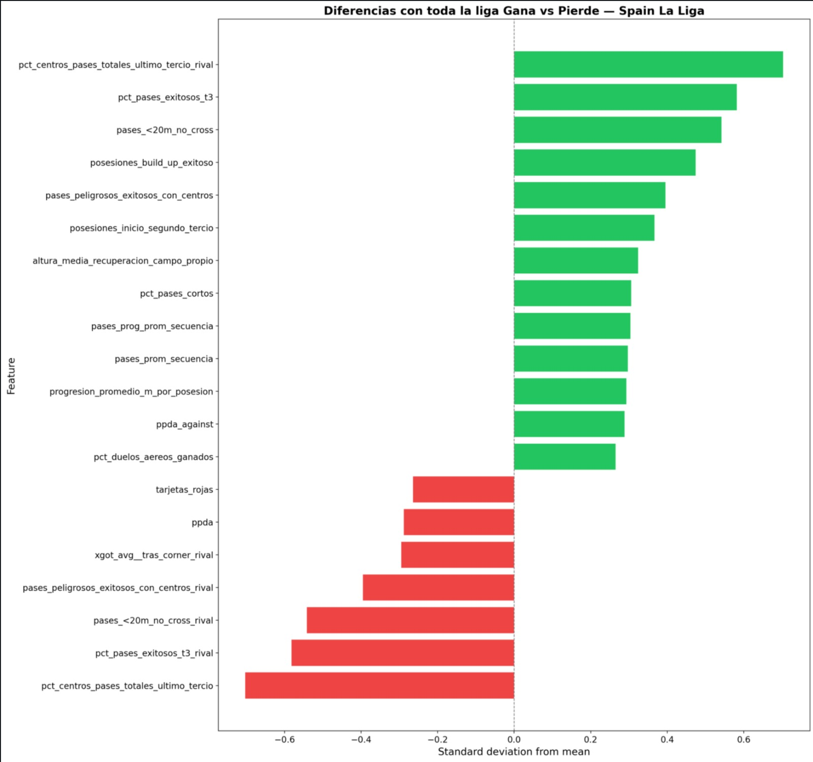

Herramientas de análisis de datos para potenciar la toma de decisiones en el fútbol profesional
El análisis de datos ya no es exclusivo de los grandes clubes europeos. Estas son las áreas donde más impacto genera en el fútbol profesional.
Evaluar miles de jugadores automáticamente y encontrar oportunidades antes que la competencia.
Medir la peligrosidad real de corners, tiros libres y laterales. Comparar equipos y ejecutores.
Informe pre-partido: cómo juega, dónde presiona, quiénes son peligrosos.
Monitorear carga física y fatiga para reducir el riesgo de lesiones musculares.
Detectar jugadores subvalorados antes de que el mercado los descubra.
Seguir la evolución de juveniles con datos y detectar los de mayor proyección.
Etiquetar jugadas automáticamente con IA y generar clips para el cuerpo técnico.
Dashboards en tiempo real durante el partido para ajustar formación, cambios y estrategia.
Un convenio con la universidad que permite acceder a capacidad analítica de alto nivel sin necesidad de armar un equipo de datos completo.
Para que cualquier análisis sea posible se necesita acceso a datos evento-a-evento detallados (tipo Opta, StatsBomb, etc.).
Todos los clubes que invierten en data a nivel profesional ya cuentan con este tipo de proveedor.
Soluciones concretas y operativas que transforman datos en ventaja competitiva.
Sistema de evaluación integral de jugadores que combina rendimiento deportivo con perfil de mercado para identificar oportunidades de fichaje.
Análisis de jugadas a balón parado que mide la peligrosidad real de cada ejecución y compara equipos a nivel global.
Informe pre-partido completo: cómo juega el próximo rival, dónde presiona, quiénes son sus jugadores clave y cómo ataca en jugadas de esquina.
Sistema de evaluación de jugadores que combina rendimiento deportivo con perfil de mercado para identificar oportunidades de fichaje.
Miles de jugadores. Decenas de ligas. Presupuesto limitado. ¿Cómo asegurarse de que la próxima incorporación sea la correcta?
Cada jugador recibe un Scouting Score (0 a 1) que combina qué tan bien juega con qué tan atractivo es como fichaje.
El score final integra rendimiento en cancha con perfil de mercado en una métrica única y comparable. Cuanto más alto el score, más interesante es el jugador como potencial fichaje.
Análisis de jugadas a balón parado que mide la peligrosidad real de cada ejecución y compara equipos a nivel global.
Las jugadas a balón parado son la forma más directa y entrenable de generar gol. Sin embargo, la mayoría de los clubes no las analizan con profundidad.
Cada jugada de pelota parada se descompone en una secuencia de acciones. Medimos la peligrosidad de toda la secuencia, no solo del remate final.
No medimos solo si terminó en gol: capturamos cuán cerca estuvo de generar daño cada jugada. Esto permite comparar ejecutores, equipos y ligas en una misma escala objetiva.
¿Cómo se compara tu equipo contra los mejores del mundo en pelota parada? Análisis comparativo de 28 ligas en una sola plataforma.

Corners defensivos de Sarmiento — comparados contra la media de la liga.

Antes de cada partido, un informe detallado de cómo el rival ejecuta sus jugadas de pelota parada: dónde envía la pelota, qué secuencias repite, cuáles son peligrosas.

Se elige el equipo y la ventana de partidos a analizar
El sistema genera todas las visualizaciones y métricas del rival
PDF o dashboard listo para el cuerpo técnico
Informe pre-partido completo: cómo juega el rival, dónde presiona, quiénes son peligrosos y cómo ataca en corners. Ejemplo: FC Barcelona.

A partir del mapa de estilos, el sistema identifica cómo juega el rival y sugiere qué enfoque usar para contrarrestarlo.

¿Dónde presiona el rival? ¿Quiénes son los que más recuperan la pelota y cómo lo hacen?


Identificamos qué comportamientos cambian en la liga según el estado del partido. Esto permite anticipar cómo va a reaccionar el rival si va arriba o abajo en el marcador.

Lo que ya estamos haciendo en inferiores de Racing con datos.
Detalle en la próxima presentación.
Herramientas probadas, operativas y listas para adaptar a la realidad del club.
Identificar oportunidades antes que la competencia
Optimizar la vía más directa al gol
Llegar al partido sabiendo cómo juega el rival